<!DOCTYPE html>
<html>
<head>
    
    <meta http-equiv="content-type" content="text/html; charset=UTF-8" />
    
        <script>
            L_NO_TOUCH = false;
            L_DISABLE_3D = false;
        </script>
    
    <style>html, body {width: 100%;height: 100%;margin: 0;padding: 0;}</style>
    <style>#map {position:absolute;top:0;bottom:0;right:0;left:0;}</style>
    <script src="https://cdn.jsdelivr.net/npm/leaflet@1.9.3/dist/leaflet.js"></script>
    <script src="https://code.jquery.com/jquery-1.12.4.min.js"></script>
    <script src="https://cdn.jsdelivr.net/npm/bootstrap@5.2.2/dist/js/bootstrap.bundle.min.js"></script>
    <script src="https://cdnjs.cloudflare.com/ajax/libs/Leaflet.awesome-markers/2.0.2/leaflet.awesome-markers.js"></script>
    <link rel="stylesheet" href="https://cdn.jsdelivr.net/npm/leaflet@1.9.3/dist/leaflet.css"/>
    <link rel="stylesheet" href="https://cdn.jsdelivr.net/npm/bootstrap@5.2.2/dist/css/bootstrap.min.css"/>
    <link rel="stylesheet" href="https://netdna.bootstrapcdn.com/bootstrap/3.0.0/css/bootstrap.min.css"/>
    <link rel="stylesheet" href="https://cdn.jsdelivr.net/npm/@fortawesome/fontawesome-free@6.2.0/css/all.min.css"/>
    <link rel="stylesheet" href="https://cdnjs.cloudflare.com/ajax/libs/Leaflet.awesome-markers/2.0.2/leaflet.awesome-markers.css"/>
    <link rel="stylesheet" href="https://cdn.jsdelivr.net/gh/python-visualization/folium/folium/templates/leaflet.awesome.rotate.min.css"/>
    
            <meta name="viewport" content="width=device-width,
                initial-scale=1.0, maximum-scale=1.0, user-scalable=no" />
            <style>
                #map_912136af7e485e8a2fd06f4344bc14c2 {
                    position: relative;
                    width: 100.0%;
                    height: 100.0%;
                    left: 0.0%;
                    top: 0.0%;
                }
                .leaflet-container { font-size: 1rem; }
            </style>
        
</head>
<body>
    
    
            <div class="folium-map" id="map_912136af7e485e8a2fd06f4344bc14c2" ></div>
        
</body>
<script>
    
    
            var map_912136af7e485e8a2fd06f4344bc14c2 = L.map(
                "map_912136af7e485e8a2fd06f4344bc14c2",
                {
                    center: [28.0, -82.5],
                    crs: L.CRS.EPSG3857,
                    zoom: 7,
                    zoomControl: false,
                    preferCanvas: false,
                }
            );

            

        
    
            var tile_layer_d1c6f905da220615d6c112d89d1e8ba7 = L.tileLayer(
                "https://cartodb-basemaps-{s}.global.ssl.fastly.net/dark_all/{z}/{x}/{y}.png",
                {"attribution": "\u0026copy; \u003ca target=\"_blank\" href=\"http://www.openstreetmap.org/copyright\"\u003eOpenStreetMap\u003c/a\u003e contributors \u0026copy; \u003ca target=\"_blank\" href=\"http://cartodb.com/attributions\"\u003eCartoDB\u003c/a\u003e, CartoDB \u003ca target=\"_blank\" href =\"http://cartodb.com/attributions\"\u003eattributions\u003c/a\u003e", "detectRetina": false, "maxNativeZoom": 18, "maxZoom": 18, "minZoom": 7, "noWrap": false, "opacity": 1, "subdomains": "abc", "tms": false}
            ).addTo(map_912136af7e485e8a2fd06f4344bc14c2);
        
    
            var marker_671258e6c048597b46ce542404795001 = L.marker(
                [29.72, -85.03],
                {}
            ).addTo(map_912136af7e485e8a2fd06f4344bc14c2);
        
    
            var icon_fc48bb7ac57713c9b6e96cab6e3da9a3 = L.AwesomeMarkers.icon(
                {"extraClasses": "fa-rotate-0", "icon": "info-sign", "iconColor": "white", "markerColor": "blue", "prefix": "glyphicon"}
            );
            marker_671258e6c048597b46ce542404795001.setIcon(icon_fc48bb7ac57713c9b6e96cab6e3da9a3);
        
    
        var popup_f7b8d711443f7d65fc03a71c18fea569 = L.popup({"maxWidth": 1000, "minWidth": 500});

        
            
                var html_079fb23db73ad18cb7f61842907425db = $(`<div id="html_079fb23db73ad18cb7f61842907425db" style="width: 100.0%; height: 100.0%;"><b>Apalachicola Airport (80211)</b><br>lat: 29.72, lon: -85.03<br><a href='../../static/img/plots/timeseries/meantemp_daily/80211_1910-1940.png' target='_BLANK'></a></div>`)[0];
                popup_f7b8d711443f7d65fc03a71c18fea569.setContent(html_079fb23db73ad18cb7f61842907425db);
            
        

        marker_671258e6c048597b46ce542404795001.bindPopup(popup_f7b8d711443f7d65fc03a71c18fea569)
        ;

        
    
    
            var marker_3b01a6ecc9bb924ee1ecd40e5b336210 = L.marker(
                [27.22, -81.86],
                {}
            ).addTo(map_912136af7e485e8a2fd06f4344bc14c2);
        
    
            var icon_7c98a2d9859ed7b675b4f3829a1686c8 = L.AwesomeMarkers.icon(
                {"extraClasses": "fa-rotate-0", "icon": "info-sign", "iconColor": "white", "markerColor": "blue", "prefix": "glyphicon"}
            );
            marker_3b01a6ecc9bb924ee1ecd40e5b336210.setIcon(icon_7c98a2d9859ed7b675b4f3829a1686c8);
        
    
        var popup_1f3c488c4604bd41fec638d76005adb1 = L.popup({"maxWidth": 1000, "minWidth": 500});

        
            
                var html_97059109c6e37c2b67de50cbfc74b8c4 = $(`<div id="html_97059109c6e37c2b67de50cbfc74b8c4" style="width: 100.0%; height: 100.0%;"><b>Arcadia (80228)</b><br>lat: 27.22, lon: -81.86<br><a href='../../static/img/plots/timeseries/meantemp_daily/80228_1910-1940.png' target='_BLANK'></a></div>`)[0];
                popup_1f3c488c4604bd41fec638d76005adb1.setContent(html_97059109c6e37c2b67de50cbfc74b8c4);
            
        

        marker_3b01a6ecc9bb924ee1ecd40e5b336210.bindPopup(popup_1f3c488c4604bd41fec638d76005adb1)
        ;

        
    
    
            var marker_1cabcda7a30387195a65efc265b34fe3 = L.marker(
                [27.59, -81.53],
                {}
            ).addTo(map_912136af7e485e8a2fd06f4344bc14c2);
        
    
            var icon_a85858d4afee427f08160f4a0d2f9d23 = L.AwesomeMarkers.icon(
                {"extraClasses": "fa-rotate-0", "icon": "info-sign", "iconColor": "white", "markerColor": "orange", "prefix": "glyphicon"}
            );
            marker_1cabcda7a30387195a65efc265b34fe3.setIcon(icon_a85858d4afee427f08160f4a0d2f9d23);
        
    
        var popup_8c8b4ca8fe55935eb12309e782094cff = L.popup({"maxWidth": 1000, "minWidth": 500});

        
            
                var html_aacc807232008043799e7c2c238f3a05 = $(`<div id="html_aacc807232008043799e7c2c238f3a05" style="width: 100.0%; height: 100.0%;"><b>Avon Park 2 W (80369)</b><br>lat: 27.59, lon: -81.53<br><a href='../../static/img/plots/timeseries/meantemp_daily/80369_1910-1940.png' target='_BLANK'>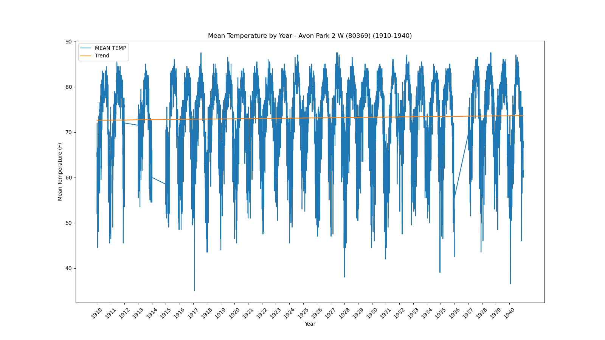</a></div>`)[0];
                popup_8c8b4ca8fe55935eb12309e782094cff.setContent(html_aacc807232008043799e7c2c238f3a05);
            
        

        marker_1cabcda7a30387195a65efc265b34fe3.bindPopup(popup_8c8b4ca8fe55935eb12309e782094cff)
        ;

        
    
    
            var marker_043f817e4710275bec2f6c43c91f9648 = L.marker(
                [27.95, -81.79],
                {}
            ).addTo(map_912136af7e485e8a2fd06f4344bc14c2);
        
    
            var icon_8ef1f754313579ab848933b2ca9b8abd = L.AwesomeMarkers.icon(
                {"extraClasses": "fa-rotate-0", "icon": "info-sign", "iconColor": "white", "markerColor": "orange", "prefix": "glyphicon"}
            );
            marker_043f817e4710275bec2f6c43c91f9648.setIcon(icon_8ef1f754313579ab848933b2ca9b8abd);
        
    
        var popup_993d729132473655e9037c61f01e9d58 = L.popup({"maxWidth": 1000, "minWidth": 500});

        
            
                var html_9be54a9f9c4f7c9bf62ac827c4494768 = $(`<div id="html_9be54a9f9c4f7c9bf62ac827c4494768" style="width: 100.0%; height: 100.0%;"><b>Bartow (80478)</b><br>lat: 27.95, lon: -81.79<br><a href='../../static/img/plots/timeseries/meantemp_daily/80478_1910-1940.png' target='_BLANK'></a></div>`)[0];
                popup_993d729132473655e9037c61f01e9d58.setContent(html_9be54a9f9c4f7c9bf62ac827c4494768);
            
        

        marker_043f817e4710275bec2f6c43c91f9648.bindPopup(popup_993d729132473655e9037c61f01e9d58)
        ;

        
    
    
            var marker_558b722ea3cb7bc06289f244e843d182 = L.marker(
                [26.7, -80.66],
                {}
            ).addTo(map_912136af7e485e8a2fd06f4344bc14c2);
        
    
            var icon_453f51680c4c6a5cab9f3a675c9dd918 = L.AwesomeMarkers.icon(
                {"extraClasses": "fa-rotate-0", "icon": "info-sign", "iconColor": "white", "markerColor": "orange", "prefix": "glyphicon"}
            );
            marker_558b722ea3cb7bc06289f244e843d182.setIcon(icon_453f51680c4c6a5cab9f3a675c9dd918);
        
    
        var popup_4926a471dcc732ec41241968c60b52c9 = L.popup({"maxWidth": 1000, "minWidth": 500});

        
            
                var html_d21f6c77b5dc4d4848da738eaeb92385 = $(`<div id="html_d21f6c77b5dc4d4848da738eaeb92385" style="width: 100.0%; height: 100.0%;"><b>Belle Glade Airport (80611)</b><br>lat: 26.7, lon: -80.66<br><a href='../../static/img/plots/timeseries/meantemp_daily/80611_1910-1940.png' target='_BLANK'>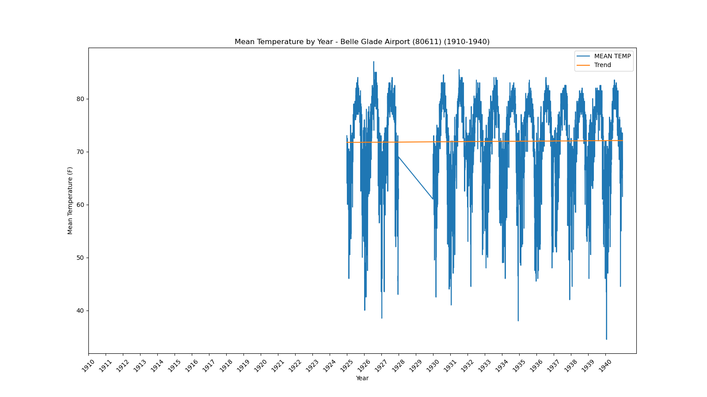</a></div>`)[0];
                popup_4926a471dcc732ec41241968c60b52c9.setContent(html_d21f6c77b5dc4d4848da738eaeb92385);
            
        

        marker_558b722ea3cb7bc06289f244e843d182.bindPopup(popup_4926a471dcc732ec41241968c60b52c9)
        ;

        
    
    
            var marker_5abc2bed65a4b19f9c7c777887e09b26 = L.marker(
                [28.62, -82.37],
                {}
            ).addTo(map_912136af7e485e8a2fd06f4344bc14c2);
        
    
            var icon_2691eac1096eec02152e1fc00526727d = L.AwesomeMarkers.icon(
                {"extraClasses": "fa-rotate-0", "icon": "info-sign", "iconColor": "white", "markerColor": "orange", "prefix": "glyphicon"}
            );
            marker_5abc2bed65a4b19f9c7c777887e09b26.setIcon(icon_2691eac1096eec02152e1fc00526727d);
        
    
        var popup_a5eecccab27567fc6b74e6c456e2e618 = L.popup({"maxWidth": 1000, "minWidth": 500});

        
            
                var html_0bb6f085362c450800648e30bdc1a89f = $(`<div id="html_0bb6f085362c450800648e30bdc1a89f" style="width: 100.0%; height: 100.0%;"><b>Chinsegut Hill (81046)</b><br>lat: 28.62, lon: -82.37<br><a href='../../static/img/plots/timeseries/meantemp_daily/81046_1910-1940.png' target='_BLANK'></a></div>`)[0];
                popup_a5eecccab27567fc6b74e6c456e2e618.setContent(html_0bb6f085362c450800648e30bdc1a89f);
            
        

        marker_5abc2bed65a4b19f9c7c777887e09b26.bindPopup(popup_a5eecccab27567fc6b74e6c456e2e618)
        ;

        
    
    
            var marker_ce6a65081c651871654be5ebe80d99ce = L.marker(
                [28.66, -82.11],
                {}
            ).addTo(map_912136af7e485e8a2fd06f4344bc14c2);
        
    
            var icon_6462b890983266b7ba17ef22bce5a776 = L.AwesomeMarkers.icon(
                {"extraClasses": "fa-rotate-0", "icon": "info-sign", "iconColor": "white", "markerColor": "blue", "prefix": "glyphicon"}
            );
            marker_ce6a65081c651871654be5ebe80d99ce.setIcon(icon_6462b890983266b7ba17ef22bce5a776);
        
    
        var popup_1ea1f6d21a518eef660dff357d16ca25 = L.popup({"maxWidth": 1000, "minWidth": 500});

        
            
                var html_d7ef9358c150dde9cf7d01d5906e3342 = $(`<div id="html_d7ef9358c150dde9cf7d01d5906e3342" style="width: 100.0%; height: 100.0%;"><b>Bushnell 1 E (81163)</b><br>lat: 28.66, lon: -82.11<br><a href='../../static/img/plots/timeseries/meantemp_daily/81163_1910-1940.png' target='_BLANK'></a></div>`)[0];
                popup_1ea1f6d21a518eef660dff357d16ca25.setContent(html_d7ef9358c150dde9cf7d01d5906e3342);
            
        

        marker_ce6a65081c651871654be5ebe80d99ce.bindPopup(popup_1ea1f6d21a518eef660dff357d16ca25)
        ;

        
    
    
            var marker_2c6f4fe50512b889b3a8b7f8cfaac62c = L.marker(
                [30.78, -85.54],
                {}
            ).addTo(map_912136af7e485e8a2fd06f4344bc14c2);
        
    
            var icon_782a02e940295b8946c40bb61e3dfd33 = L.AwesomeMarkers.icon(
                {"extraClasses": "fa-rotate-0", "icon": "info-sign", "iconColor": "white", "markerColor": "orange", "prefix": "glyphicon"}
            );
            marker_2c6f4fe50512b889b3a8b7f8cfaac62c.setIcon(icon_782a02e940295b8946c40bb61e3dfd33);
        
    
        var popup_e611dddb6b5551689ad76bcb7f13e564 = L.popup({"maxWidth": 1000, "minWidth": 500});

        
            
                var html_0ce175e64575e3da135cb332afd27ec5 = $(`<div id="html_0ce175e64575e3da135cb332afd27ec5" style="width: 100.0%; height: 100.0%;"><b>Chipley (81544)</b><br>lat: 30.78, lon: -85.54<br><a href='../../static/img/plots/timeseries/meantemp_daily/81544_1910-1940.png' target='_BLANK'></a></div>`)[0];
                popup_e611dddb6b5551689ad76bcb7f13e564.setContent(html_0ce175e64575e3da135cb332afd27ec5);
            
        

        marker_2c6f4fe50512b889b3a8b7f8cfaac62c.bindPopup(popup_e611dddb6b5551689ad76bcb7f13e564)
        ;

        
    
    
            var marker_80a008f50e290d75935e78118a142876 = L.marker(
                [29.43, -81.51],
                {}
            ).addTo(map_912136af7e485e8a2fd06f4344bc14c2);
        
    
            var icon_4818aff2c4bd8419add412c57f27f8bf = L.AwesomeMarkers.icon(
                {"extraClasses": "fa-rotate-0", "icon": "info-sign", "iconColor": "white", "markerColor": "blue", "prefix": "glyphicon"}
            );
            marker_80a008f50e290d75935e78118a142876.setIcon(icon_4818aff2c4bd8419add412c57f27f8bf);
        
    
        var popup_b235260b824c83b052c2b83576fd36fd = L.popup({"maxWidth": 1000, "minWidth": 500});

        
            
                var html_f0e06987eda8387b7eff482619fad1bd = $(`<div id="html_f0e06987eda8387b7eff482619fad1bd" style="width: 100.0%; height: 100.0%;"><b>Crescent City (81978)</b><br>lat: 29.43, lon: -81.51<br><a href='../../static/img/plots/timeseries/meantemp_daily/81978_1910-1940.png' target='_BLANK'></a></div>`)[0];
                popup_b235260b824c83b052c2b83576fd36fd.setContent(html_f0e06987eda8387b7eff482619fad1bd);
            
        

        marker_80a008f50e290d75935e78118a142876.bindPopup(popup_b235260b824c83b052c2b83576fd36fd)
        ;

        
    
    
            var marker_ebeba96d76f21b7b78073ac3a0141593 = L.marker(
                [29.16, -81.0],
                {}
            ).addTo(map_912136af7e485e8a2fd06f4344bc14c2);
        
    
            var icon_d1ce4eb983a15cd4070764cd6b23613c = L.AwesomeMarkers.icon(
                {"extraClasses": "fa-rotate-0", "icon": "info-sign", "iconColor": "white", "markerColor": "blue", "prefix": "glyphicon"}
            );
            marker_ebeba96d76f21b7b78073ac3a0141593.setIcon(icon_d1ce4eb983a15cd4070764cd6b23613c);
        
    
        var popup_03db2256ac31e276d721169667f57cd8 = L.popup({"maxWidth": 1000, "minWidth": 500});

        
            
                var html_f19b7fbb46fa6bda5d7380cfc31ac0c2 = $(`<div id="html_f19b7fbb46fa6bda5d7380cfc31ac0c2" style="width: 100.0%; height: 100.0%;"><b>Daytona Beach (82150)</b><br>lat: 29.16, lon: -81<br><a href='../../static/img/plots/timeseries/meantemp_daily/82150_1910-1940.png' target='_BLANK'></a></div>`)[0];
                popup_03db2256ac31e276d721169667f57cd8.setContent(html_f19b7fbb46fa6bda5d7380cfc31ac0c2);
            
        

        marker_ebeba96d76f21b7b78073ac3a0141593.bindPopup(popup_03db2256ac31e276d721169667f57cd8)
        ;

        
    
    
            var marker_ab4d8e78d42eacd67df531eae6b3ec5d = L.marker(
                [30.72, -86.12],
                {}
            ).addTo(map_912136af7e485e8a2fd06f4344bc14c2);
        
    
            var icon_dd60314ac26f7ab03a233a1dc4fd6dfc = L.AwesomeMarkers.icon(
                {"extraClasses": "fa-rotate-0", "icon": "info-sign", "iconColor": "white", "markerColor": "orange", "prefix": "glyphicon"}
            );
            marker_ab4d8e78d42eacd67df531eae6b3ec5d.setIcon(icon_dd60314ac26f7ab03a233a1dc4fd6dfc);
        
    
        var popup_13e229fd9ef9abe199eb138cb65442d8 = L.popup({"maxWidth": 1000, "minWidth": 500});

        
            
                var html_bb4ccb7c56c9179a2a45475b6f54e023 = $(`<div id="html_bb4ccb7c56c9179a2a45475b6f54e023" style="width: 100.0%; height: 100.0%;"><b>De Funiak Springs 1 E (82220)</b><br>lat: 30.72, lon: -86.12<br><a href='../../static/img/plots/timeseries/meantemp_daily/82220_1910-1940.png' target='_BLANK'>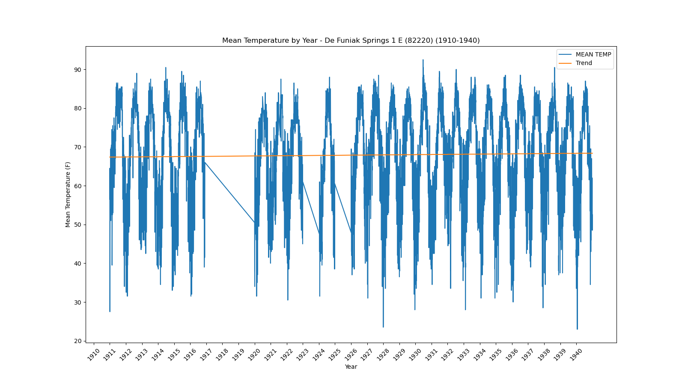</a></div>`)[0];
                popup_13e229fd9ef9abe199eb138cb65442d8.setContent(html_bb4ccb7c56c9179a2a45475b6f54e023);
            
        

        marker_ab4d8e78d42eacd67df531eae6b3ec5d.bindPopup(popup_13e229fd9ef9abe199eb138cb65442d8)
        ;

        
    
    
            var marker_6553f0398e0584dcd83602affe7c493e = L.marker(
                [29.03, -81.3],
                {}
            ).addTo(map_912136af7e485e8a2fd06f4344bc14c2);
        
    
            var icon_44e0391ce264cadf616d3ce51ef1217f = L.AwesomeMarkers.icon(
                {"extraClasses": "fa-rotate-0", "icon": "info-sign", "iconColor": "white", "markerColor": "orange", "prefix": "glyphicon"}
            );
            marker_6553f0398e0584dcd83602affe7c493e.setIcon(icon_44e0391ce264cadf616d3ce51ef1217f);
        
    
        var popup_7bfb3ac31fed63ff4543cac4975ba9f4 = L.popup({"maxWidth": 1000, "minWidth": 500});

        
            
                var html_b0cc91873f20398448b456c6536d036f = $(`<div id="html_b0cc91873f20398448b456c6536d036f" style="width: 100.0%; height: 100.0%;"><b>Deland 1 SSE (82229)</b><br>lat: 29.03, lon: -81.3<br><a href='../../static/img/plots/timeseries/meantemp_daily/82229_1910-1940.png' target='_BLANK'></a></div>`)[0];
                popup_7bfb3ac31fed63ff4543cac4975ba9f4.setContent(html_b0cc91873f20398448b456c6536d036f);
            
        

        marker_6553f0398e0584dcd83602affe7c493e.bindPopup(popup_7bfb3ac31fed63ff4543cac4975ba9f4)
        ;

        
    
    
            var marker_eeac276d693adfac93315991748a1da3 = L.marker(
                [25.29, -80.89],
                {}
            ).addTo(map_912136af7e485e8a2fd06f4344bc14c2);
        
    
            var icon_d9ee94fd7b4ee2d6594be77fc930b11c = L.AwesomeMarkers.icon(
                {"extraClasses": "fa-rotate-0", "icon": "info-sign", "iconColor": "white", "markerColor": "orange", "prefix": "glyphicon"}
            );
            marker_eeac276d693adfac93315991748a1da3.setIcon(icon_d9ee94fd7b4ee2d6594be77fc930b11c);
        
    
        var popup_8b80757d11462e5f6db45a670c52e8fc = L.popup({"maxWidth": 1000, "minWidth": 500});

        
            
                var html_20b1765210373216452742cdb356279c = $(`<div id="html_20b1765210373216452742cdb356279c" style="width: 100.0%; height: 100.0%;"><b>Everglades (82850)</b><br>lat: 25.29, lon: -80.89<br><a href='../../static/img/plots/timeseries/meantemp_daily/82850_1910-1940.png' target='_BLANK'>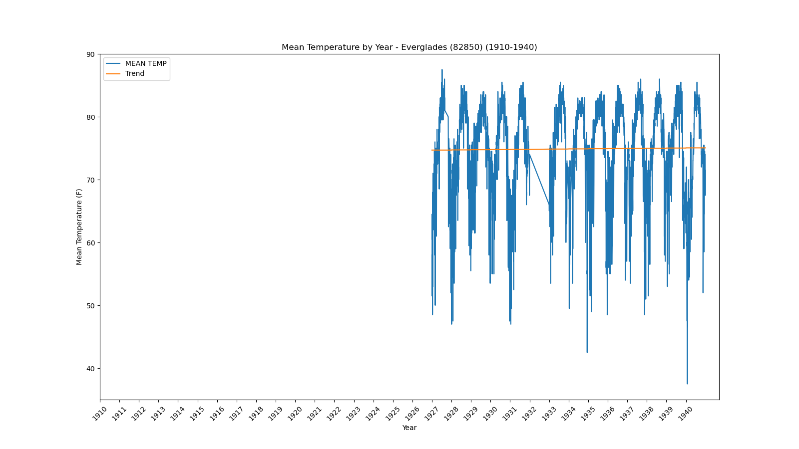</a></div>`)[0];
                popup_8b80757d11462e5f6db45a670c52e8fc.setContent(html_20b1765210373216452742cdb356279c);
            
        

        marker_eeac276d693adfac93315991748a1da3.bindPopup(popup_8b80757d11462e5f6db45a670c52e8fc)
        ;

        
    
    
            var marker_f5f893d88a95913123d5d7c8edded890 = L.marker(
                [29.75, -81.54],
                {}
            ).addTo(map_912136af7e485e8a2fd06f4344bc14c2);
        
    
            var icon_4338a2c64ff9a5ab9338945328d97589 = L.AwesomeMarkers.icon(
                {"extraClasses": "fa-rotate-0", "icon": "info-sign", "iconColor": "white", "markerColor": "orange", "prefix": "glyphicon"}
            );
            marker_f5f893d88a95913123d5d7c8edded890.setIcon(icon_4338a2c64ff9a5ab9338945328d97589);
        
    
        var popup_d0f481626744ec805ec00978579c3161 = L.popup({"maxWidth": 1000, "minWidth": 500});

        
            
                var html_617fe1feb8f3f2970e20dbab3660ac84 = $(`<div id="html_617fe1feb8f3f2970e20dbab3660ac84" style="width: 100.0%; height: 100.0%;"><b>Federal Point (82915)</b><br>lat: 29.75, lon: -81.54<br><a href='../../static/img/plots/timeseries/meantemp_daily/82915_1910-1940.png' target='_BLANK'>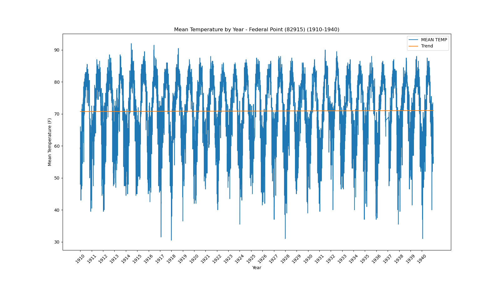</a></div>`)[0];
                popup_d0f481626744ec805ec00978579c3161.setContent(html_617fe1feb8f3f2970e20dbab3660ac84);
            
        

        marker_f5f893d88a95913123d5d7c8edded890.bindPopup(popup_d0f481626744ec805ec00978579c3161)
        ;

        
    
    
            var marker_9832551258a977361e7a4ff137efe36a = L.marker(
                [30.62, -81.46],
                {}
            ).addTo(map_912136af7e485e8a2fd06f4344bc14c2);
        
    
            var icon_80dc1e17d7b9c02a35dac97b36186d45 = L.AwesomeMarkers.icon(
                {"extraClasses": "fa-rotate-0", "icon": "info-sign", "iconColor": "white", "markerColor": "orange", "prefix": "glyphicon"}
            );
            marker_9832551258a977361e7a4ff137efe36a.setIcon(icon_80dc1e17d7b9c02a35dac97b36186d45);
        
    
        var popup_ae4041479e365aad681e8c1135ce44f4 = L.popup({"maxWidth": 1000, "minWidth": 500});

        
            
                var html_4fc8c353ca53605452cd0aaa481ae093 = $(`<div id="html_4fc8c353ca53605452cd0aaa481ae093" style="width: 100.0%; height: 100.0%;"><b>Fernandina Beach (82944)</b><br>lat: 30.62, lon: -81.46<br><a href='../../static/img/plots/timeseries/meantemp_daily/82944_1910-1940.png' target='_BLANK'>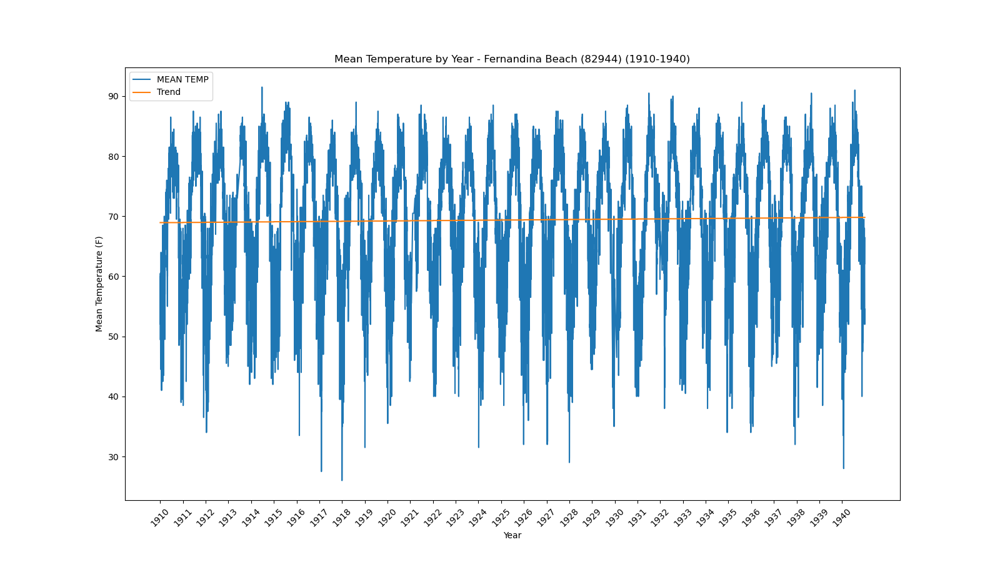</a></div>`)[0];
                popup_ae4041479e365aad681e8c1135ce44f4.setContent(html_4fc8c353ca53605452cd0aaa481ae093);
            
        

        marker_9832551258a977361e7a4ff137efe36a.bindPopup(popup_ae4041479e365aad681e8c1135ce44f4)
        ;

        
    
    
            var marker_8043f852ff46bf94eac4233c2f6e2471 = L.marker(
                [26.07, -80.15],
                {}
            ).addTo(map_912136af7e485e8a2fd06f4344bc14c2);
        
    
            var icon_880d52b46878ff167949925295d4f445 = L.AwesomeMarkers.icon(
                {"extraClasses": "fa-rotate-0", "icon": "info-sign", "iconColor": "white", "markerColor": "orange", "prefix": "glyphicon"}
            );
            marker_8043f852ff46bf94eac4233c2f6e2471.setIcon(icon_880d52b46878ff167949925295d4f445);
        
    
        var popup_8442a37aa093e1447facd82d8dd71b10 = L.popup({"maxWidth": 1000, "minWidth": 500});

        
            
                var html_461c16f38546941e52172a75652fcee8 = $(`<div id="html_461c16f38546941e52172a75652fcee8" style="width: 100.0%; height: 100.0%;"><b>Ft Lauderdale (83163)</b><br>lat: 26.07, lon: -80.15<br><a href='../../static/img/plots/timeseries/meantemp_daily/83163_1910-1940.png' target='_BLANK'></a></div>`)[0];
                popup_8442a37aa093e1447facd82d8dd71b10.setContent(html_461c16f38546941e52172a75652fcee8);
            
        

        marker_8043f852ff46bf94eac4233c2f6e2471.bindPopup(popup_8442a37aa093e1447facd82d8dd71b10)
        ;

        
    
    
            var marker_a6bb82d0d16616745a2683b92881a5b5 = L.marker(
                [26.59, -81.87],
                {}
            ).addTo(map_912136af7e485e8a2fd06f4344bc14c2);
        
    
            var icon_513f50a948f3ace7c144817dc4d94d37 = L.AwesomeMarkers.icon(
                {"extraClasses": "fa-rotate-0", "icon": "info-sign", "iconColor": "white", "markerColor": "orange", "prefix": "glyphicon"}
            );
            marker_a6bb82d0d16616745a2683b92881a5b5.setIcon(icon_513f50a948f3ace7c144817dc4d94d37);
        
    
        var popup_cb0995bbdab1730ca4af391e844d1091 = L.popup({"maxWidth": 1000, "minWidth": 500});

        
            
                var html_8c83a760c8232fa434a10660361fac25 = $(`<div id="html_8c83a760c8232fa434a10660361fac25" style="width: 100.0%; height: 100.0%;"><b>Fort Myers Page Field Airport (83186)</b><br>lat: 26.59, lon: -81.87<br><a href='../../static/img/plots/timeseries/meantemp_daily/83186_1910-1940.png' target='_BLANK'>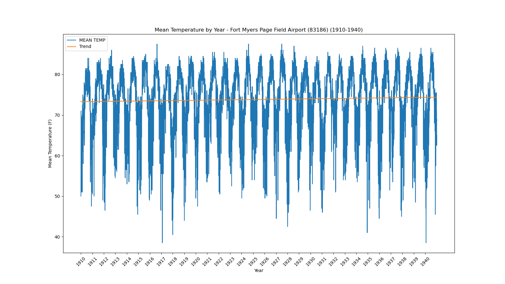</a></div>`)[0];
                popup_cb0995bbdab1730ca4af391e844d1091.setContent(html_8c83a760c8232fa434a10660361fac25);
            
        

        marker_a6bb82d0d16616745a2683b92881a5b5.bindPopup(popup_cb0995bbdab1730ca4af391e844d1091)
        ;

        
    
    
            var marker_7f8dfd5c4db2099b0b955bfbbc5774eb = L.marker(
                [27.44, -80.34],
                {}
            ).addTo(map_912136af7e485e8a2fd06f4344bc14c2);
        
    
            var icon_c5bb0a4d219f29d87c09066da60334bf = L.AwesomeMarkers.icon(
                {"extraClasses": "fa-rotate-0", "icon": "info-sign", "iconColor": "white", "markerColor": "orange", "prefix": "glyphicon"}
            );
            marker_7f8dfd5c4db2099b0b955bfbbc5774eb.setIcon(icon_c5bb0a4d219f29d87c09066da60334bf);
        
    
        var popup_5cc33338b31e2a27b88dbbe2355e0237 = L.popup({"maxWidth": 1000, "minWidth": 500});

        
            
                var html_253d9024aa5cb91f3e222c24cfa96618 = $(`<div id="html_253d9024aa5cb91f3e222c24cfa96618" style="width: 100.0%; height: 100.0%;"><b>Fort Pierce (83207)</b><br>lat: 27.44, lon: -80.34<br><a href='../../static/img/plots/timeseries/meantemp_daily/83207_1910-1940.png' target='_BLANK'>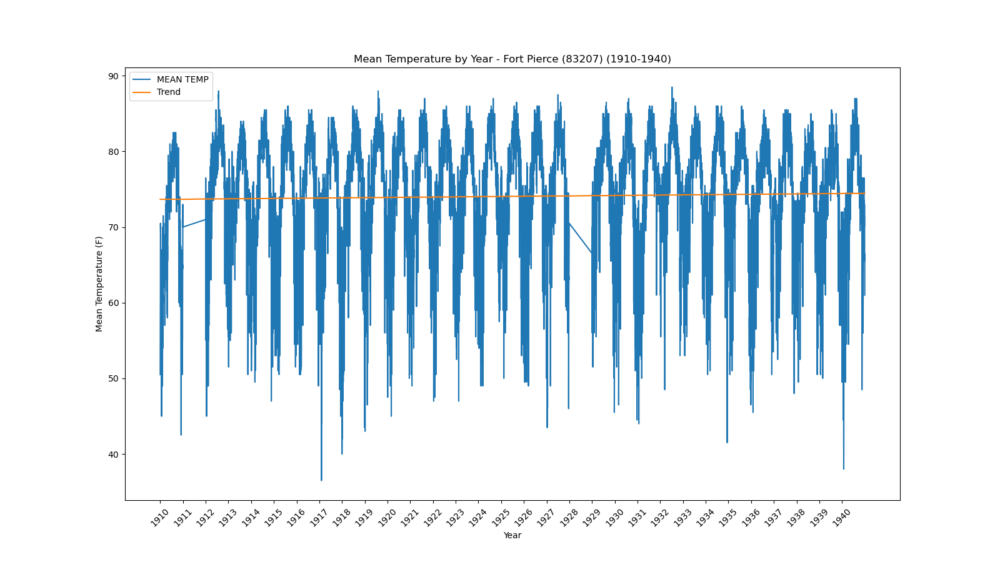</a></div>`)[0];
                popup_5cc33338b31e2a27b88dbbe2355e0237.setContent(html_253d9024aa5cb91f3e222c24cfa96618);
            
        

        marker_7f8dfd5c4db2099b0b955bfbbc5774eb.bindPopup(popup_5cc33338b31e2a27b88dbbe2355e0237)
        ;

        
    
    
            var marker_f532dc3539ca6336bdfed6ca9be5aad5 = L.marker(
                [30.28, -82.16],
                {}
            ).addTo(map_912136af7e485e8a2fd06f4344bc14c2);
        
    
            var icon_ed7b7dfe301e0cf26aab9098c29cf0bb = L.AwesomeMarkers.icon(
                {"extraClasses": "fa-rotate-0", "icon": "info-sign", "iconColor": "white", "markerColor": "orange", "prefix": "glyphicon"}
            );
            marker_f532dc3539ca6336bdfed6ca9be5aad5.setIcon(icon_ed7b7dfe301e0cf26aab9098c29cf0bb);
        
    
        var popup_8eea5eb932029e7d72d75511ed886c58 = L.popup({"maxWidth": 1000, "minWidth": 500});

        
            
                var html_297e8dd16ae570f3605e83dd0889058b = $(`<div id="html_297e8dd16ae570f3605e83dd0889058b" style="width: 100.0%; height: 100.0%;"><b>Glen St Mary 1 W (83470)</b><br>lat: 30.28, lon: -82.16<br><a href='../../static/img/plots/timeseries/meantemp_daily/83470_1910-1940.png' target='_BLANK'></a></div>`)[0];
                popup_8eea5eb932029e7d72d75511ed886c58.setContent(html_297e8dd16ae570f3605e83dd0889058b);
            
        

        marker_f532dc3539ca6336bdfed6ca9be5aad5.bindPopup(popup_8eea5eb932029e7d72d75511ed886c58)
        ;

        
    
    
            var marker_6c640a9e2889f3618d31d03dd9b093e1 = L.marker(
                [28.84, -82.34],
                {}
            ).addTo(map_912136af7e485e8a2fd06f4344bc14c2);
        
    
            var icon_2f6848030d75c35e965cc0e4d0619949 = L.AwesomeMarkers.icon(
                {"extraClasses": "fa-rotate-0", "icon": "info-sign", "iconColor": "white", "markerColor": "orange", "prefix": "glyphicon"}
            );
            marker_6c640a9e2889f3618d31d03dd9b093e1.setIcon(icon_2f6848030d75c35e965cc0e4d0619949);
        
    
        var popup_8beb98b517b3f0e6e5debc879790c336 = L.popup({"maxWidth": 1000, "minWidth": 500});

        
            
                var html_b5675144fa3832b56455a96b98301b35 = $(`<div id="html_b5675144fa3832b56455a96b98301b35" style="width: 100.0%; height: 100.0%;"><b>Iverness 3 SE (84289)</b><br>lat: 28.84, lon: -82.34<br><a href='../../static/img/plots/timeseries/meantemp_daily/84289_1910-1940.png' target='_BLANK'></a></div>`)[0];
                popup_8beb98b517b3f0e6e5debc879790c336.setContent(html_b5675144fa3832b56455a96b98301b35);
            
        

        marker_6c640a9e2889f3618d31d03dd9b093e1.bindPopup(popup_8beb98b517b3f0e6e5debc879790c336)
        ;

        
    
    
            var marker_1487b5d33164adcb516e5164326c9d36 = L.marker(
                [26.71, -81.46],
                {}
            ).addTo(map_912136af7e485e8a2fd06f4344bc14c2);
        
    
            var icon_626bcfd8695b163e64343495c42c47d7 = L.AwesomeMarkers.icon(
                {"extraClasses": "fa-rotate-0", "icon": "info-sign", "iconColor": "white", "markerColor": "blue", "prefix": "glyphicon"}
            );
            marker_1487b5d33164adcb516e5164326c9d36.setIcon(icon_626bcfd8695b163e64343495c42c47d7);
        
    
        var popup_9482b7def8fe82f4ee05049015818e6d = L.popup({"maxWidth": 1000, "minWidth": 500});

        
            
                var html_d2cf62d2a7e13087dd3818093c0c6893 = $(`<div id="html_d2cf62d2a7e13087dd3818093c0c6893" style="width: 100.0%; height: 100.0%;"><b>La Belle (84662)</b><br>lat: 26.71, lon: -81.46<br><a href='../../static/img/plots/timeseries/meantemp_daily/84662_1910-1940.png' target='_BLANK'></a></div>`)[0];
                popup_9482b7def8fe82f4ee05049015818e6d.setContent(html_d2cf62d2a7e13087dd3818093c0c6893);
            
        

        marker_1487b5d33164adcb516e5164326c9d36.bindPopup(popup_9482b7def8fe82f4ee05049015818e6d)
        ;

        
    
    
            var marker_8a0aba075fa93f6c4d80fba102993a31 = L.marker(
                [30.12, -82.64],
                {}
            ).addTo(map_912136af7e485e8a2fd06f4344bc14c2);
        
    
            var icon_c6a156da6c4c4a888e356acefe6a978e = L.AwesomeMarkers.icon(
                {"extraClasses": "fa-rotate-0", "icon": "info-sign", "iconColor": "white", "markerColor": "orange", "prefix": "glyphicon"}
            );
            marker_8a0aba075fa93f6c4d80fba102993a31.setIcon(icon_c6a156da6c4c4a888e356acefe6a978e);
        
    
        var popup_e0c51d162c760284191c1536f54def12 = L.popup({"maxWidth": 1000, "minWidth": 500});

        
            
                var html_8dbd7d12a1563d30faf1705cdfb4c91f = $(`<div id="html_8dbd7d12a1563d30faf1705cdfb4c91f" style="width: 100.0%; height: 100.0%;"><b>Lake City 2 E (84731)</b><br>lat: 30.12, lon: -82.64<br><a href='../../static/img/plots/timeseries/meantemp_daily/84731_1910-1940.png' target='_BLANK'></a></div>`)[0];
                popup_e0c51d162c760284191c1536f54def12.setContent(html_8dbd7d12a1563d30faf1705cdfb4c91f);
            
        

        marker_8a0aba075fa93f6c4d80fba102993a31.bindPopup(popup_e0c51d162c760284191c1536f54def12)
        ;

        
    
    
            var marker_b10391b29b8b3d551babb5ce19e5cec0 = L.marker(
                [30.29, -82.99],
                {}
            ).addTo(map_912136af7e485e8a2fd06f4344bc14c2);
        
    
            var icon_106ee4b3b3c42b6fa5fa1ab0f75e8320 = L.AwesomeMarkers.icon(
                {"extraClasses": "fa-rotate-0", "icon": "info-sign", "iconColor": "white", "markerColor": "orange", "prefix": "glyphicon"}
            );
            marker_b10391b29b8b3d551babb5ce19e5cec0.setIcon(icon_106ee4b3b3c42b6fa5fa1ab0f75e8320);
        
    
        var popup_6f5e353a880a783ad89c9a345010c883 = L.popup({"maxWidth": 1000, "minWidth": 500});

        
            
                var html_7a4d957a6265f7a0ef426809847a7159 = $(`<div id="html_7a4d957a6265f7a0ef426809847a7159" style="width: 100.0%; height: 100.0%;"><b>Live Oak (85099)</b><br>lat: 30.29, lon: -82.99<br><a href='../../static/img/plots/timeseries/meantemp_daily/85099_1910-1940.png' target='_BLANK'></a></div>`)[0];
                popup_6f5e353a880a783ad89c9a345010c883.setContent(html_7a4d957a6265f7a0ef426809847a7159);
            
        

        marker_b10391b29b8b3d551babb5ce19e5cec0.bindPopup(popup_6f5e353a880a783ad89c9a345010c883)
        ;

        
    
    
            var marker_6d06739e949b5744f6d7b0a09b73f770 = L.marker(
                [30.48, -83.24],
                {}
            ).addTo(map_912136af7e485e8a2fd06f4344bc14c2);
        
    
            var icon_3c329fa43911d187efee08321124a225 = L.AwesomeMarkers.icon(
                {"extraClasses": "fa-rotate-0", "icon": "info-sign", "iconColor": "white", "markerColor": "blue", "prefix": "glyphicon"}
            );
            marker_6d06739e949b5744f6d7b0a09b73f770.setIcon(icon_3c329fa43911d187efee08321124a225);
        
    
        var popup_184e4e759a2c12e0ca2cfe87df3656c1 = L.popup({"maxWidth": 1000, "minWidth": 500});

        
            
                var html_321a64d0f76c5d197af000b10a5cb507 = $(`<div id="html_321a64d0f76c5d197af000b10a5cb507" style="width: 100.0%; height: 100.0%;"><b>Madison (85275)</b><br>lat: 30.48, lon: -83.24<br><a href='../../static/img/plots/timeseries/meantemp_daily/85275_1910-1940.png' target='_BLANK'></a></div>`)[0];
                popup_184e4e759a2c12e0ca2cfe87df3656c1.setContent(html_321a64d0f76c5d197af000b10a5cb507);
            
        

        marker_6d06739e949b5744f6d7b0a09b73f770.bindPopup(popup_184e4e759a2c12e0ca2cfe87df3656c1)
        ;

        
    
    
            var marker_5b829680e0a0925e6aa9dc64b465729a = L.marker(
                [25.79, -80.14],
                {}
            ).addTo(map_912136af7e485e8a2fd06f4344bc14c2);
        
    
            var icon_945129dea570c951abcda11310187fb7 = L.AwesomeMarkers.icon(
                {"extraClasses": "fa-rotate-0", "icon": "info-sign", "iconColor": "white", "markerColor": "blue", "prefix": "glyphicon"}
            );
            marker_5b829680e0a0925e6aa9dc64b465729a.setIcon(icon_945129dea570c951abcda11310187fb7);
        
    
        var popup_b75912caddd7e401472d8a87d1ceead9 = L.popup({"maxWidth": 1000, "minWidth": 500});

        
            
                var html_44243ab2d8e210c45bd1325f082d07cc = $(`<div id="html_44243ab2d8e210c45bd1325f082d07cc" style="width: 100.0%; height: 100.0%;"><b>Miami Beach (85658)</b><br>lat: 25.79, lon: -80.14<br><a href='../../static/img/plots/timeseries/meantemp_daily/85658_1910-1940.png' target='_BLANK'>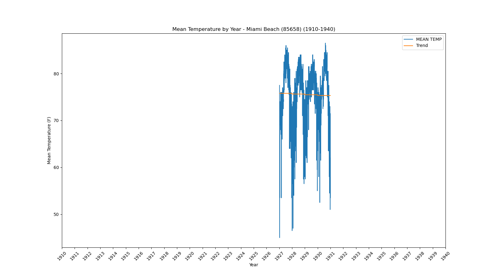</a></div>`)[0];
                popup_b75912caddd7e401472d8a87d1ceead9.setContent(html_44243ab2d8e210c45bd1325f082d07cc);
            
        

        marker_5b829680e0a0925e6aa9dc64b465729a.bindPopup(popup_b75912caddd7e401472d8a87d1ceead9)
        ;

        
    
    
            var marker_c53b2bdf6c9a4291815e0db0259d61f1 = L.marker(
                [30.29, -83.46],
                {}
            ).addTo(map_912136af7e485e8a2fd06f4344bc14c2);
        
    
            var icon_d9646cae9fae5ee4beab0a2d181201d1 = L.AwesomeMarkers.icon(
                {"extraClasses": "fa-rotate-0", "icon": "info-sign", "iconColor": "white", "markerColor": "blue", "prefix": "glyphicon"}
            );
            marker_c53b2bdf6c9a4291815e0db0259d61f1.setIcon(icon_d9646cae9fae5ee4beab0a2d181201d1);
        
    
        var popup_8481959cd7f68068d1a721f933e02843 = L.popup({"maxWidth": 1000, "minWidth": 500});

        
            
                var html_47d1c093f5ff6e28ac20ba7bdaa95431 = $(`<div id="html_47d1c093f5ff6e28ac20ba7bdaa95431" style="width: 100.0%; height: 100.0%;"><b>Monticello 5 SE (85879)</b><br>lat: 30.29, lon: -83.46<br><a href='../../static/img/plots/timeseries/meantemp_daily/85879_1910-1940.png' target='_BLANK'>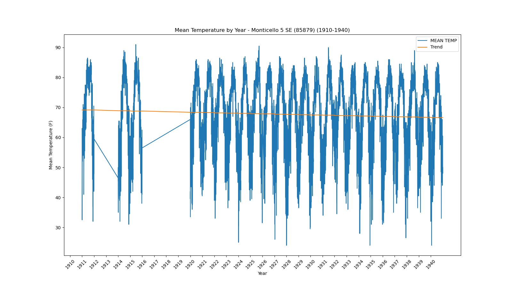</a></div>`)[0];
                popup_8481959cd7f68068d1a721f933e02843.setContent(html_47d1c093f5ff6e28ac20ba7bdaa95431);
            
        

        marker_c53b2bdf6c9a4291815e0db0259d61f1.bindPopup(popup_8481959cd7f68068d1a721f933e02843)
        ;

        
    
    
            var marker_324f5ce3d4fc650a976c1b474fe0a117 = L.marker(
                [26.84, -81.09],
                {}
            ).addTo(map_912136af7e485e8a2fd06f4344bc14c2);
        
    
            var icon_939ea6d1d8ba9342d4ac9e24edc19be7 = L.AwesomeMarkers.icon(
                {"extraClasses": "fa-rotate-0", "icon": "info-sign", "iconColor": "white", "markerColor": "blue", "prefix": "glyphicon"}
            );
            marker_324f5ce3d4fc650a976c1b474fe0a117.setIcon(icon_939ea6d1d8ba9342d4ac9e24edc19be7);
        
    
        var popup_7d76f14aa86dcbbd0a3d6af45e86b3bd = L.popup({"maxWidth": 1000, "minWidth": 500});

        
            
                var html_6ab3b485271f4a9603cc41478cc71cb7 = $(`<div id="html_6ab3b485271f4a9603cc41478cc71cb7" style="width: 100.0%; height: 100.0%;"><b>Moore Haven Lock 1 (85895)</b><br>lat: 26.84, lon: -81.09<br><a href='../../static/img/plots/timeseries/meantemp_daily/85895_1910-1940.png' target='_BLANK'></a></div>`)[0];
                popup_7d76f14aa86dcbbd0a3d6af45e86b3bd.setContent(html_6ab3b485271f4a9603cc41478cc71cb7);
            
        

        marker_324f5ce3d4fc650a976c1b474fe0a117.bindPopup(popup_7d76f14aa86dcbbd0a3d6af45e86b3bd)
        ;

        
    
    
            var marker_237eff136e4274a28b14f4c3200d6f18 = L.marker(
                [27.93, -81.59],
                {}
            ).addTo(map_912136af7e485e8a2fd06f4344bc14c2);
        
    
            var icon_5e46f28e681c05ddafa9e113d0fc8f4f = L.AwesomeMarkers.icon(
                {"extraClasses": "fa-rotate-0", "icon": "info-sign", "iconColor": "white", "markerColor": "blue", "prefix": "glyphicon"}
            );
            marker_237eff136e4274a28b14f4c3200d6f18.setIcon(icon_5e46f28e681c05ddafa9e113d0fc8f4f);
        
    
        var popup_03f2fd90618a8dde849844d0de72c803 = L.popup({"maxWidth": 1000, "minWidth": 500});

        
            
                var html_57479e3b6b9a9828468bbfbb273c7006 = $(`<div id="html_57479e3b6b9a9828468bbfbb273c7006" style="width: 100.0%; height: 100.0%;"><b>Mountain Lake (85973)</b><br>lat: 27.93, lon: -81.59<br><a href='../../static/img/plots/timeseries/meantemp_daily/85973_1910-1940.png' target='_BLANK'></a></div>`)[0];
                popup_03f2fd90618a8dde849844d0de72c803.setContent(html_57479e3b6b9a9828468bbfbb273c7006);
            
        

        marker_237eff136e4274a28b14f4c3200d6f18.bindPopup(popup_03f2fd90618a8dde849844d0de72c803)
        ;

        
    
    
            var marker_23381cb07c495fb718dd08876dc07640 = L.marker(
                [30.52, -86.48],
                {}
            ).addTo(map_912136af7e485e8a2fd06f4344bc14c2);
        
    
            var icon_718d23dd6e89494b76129de73e05d84f = L.AwesomeMarkers.icon(
                {"extraClasses": "fa-rotate-0", "icon": "info-sign", "iconColor": "white", "markerColor": "orange", "prefix": "glyphicon"}
            );
            marker_23381cb07c495fb718dd08876dc07640.setIcon(icon_718d23dd6e89494b76129de73e05d84f);
        
    
        var popup_673cc6bbfda32cb1de1e727dffa6fc73 = L.popup({"maxWidth": 1000, "minWidth": 500});

        
            
                var html_6c210701c9b8c12e915f78d4e25b087e = $(`<div id="html_6c210701c9b8c12e915f78d4e25b087e" style="width: 100.0%; height: 100.0%;"><b>Niceville (86240)</b><br>lat: 30.52, lon: -86.48<br><a href='../../static/img/plots/timeseries/meantemp_daily/86240_1910-1940.png' target='_BLANK'>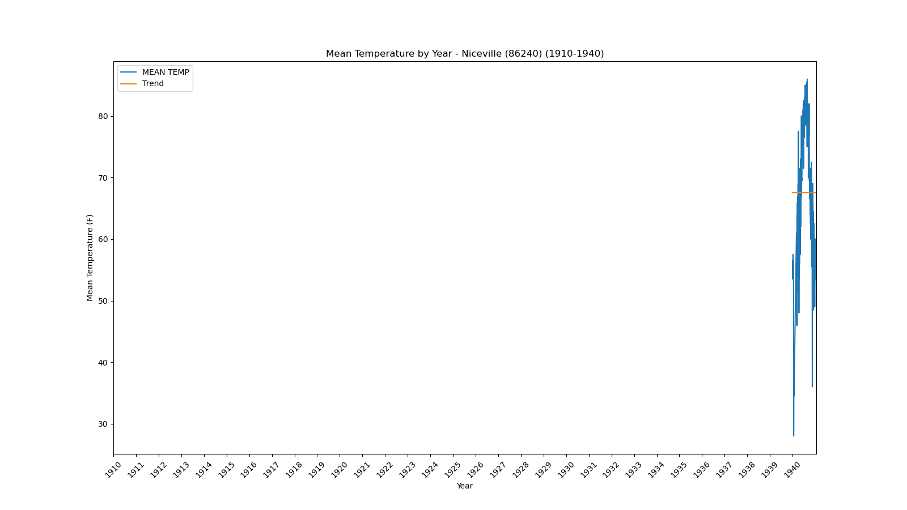</a></div>`)[0];
                popup_673cc6bbfda32cb1de1e727dffa6fc73.setContent(html_6c210701c9b8c12e915f78d4e25b087e);
            
        

        marker_23381cb07c495fb718dd08876dc07640.bindPopup(popup_673cc6bbfda32cb1de1e727dffa6fc73)
        ;

        
    
    
            var marker_26b9fb2dd7c14b95e856ffe92334fe18 = L.marker(
                [29.19, -82.14],
                {}
            ).addTo(map_912136af7e485e8a2fd06f4344bc14c2);
        
    
            var icon_f17735f8fc8ca4beea84e4b27c9cd32f = L.AwesomeMarkers.icon(
                {"extraClasses": "fa-rotate-0", "icon": "info-sign", "iconColor": "white", "markerColor": "orange", "prefix": "glyphicon"}
            );
            marker_26b9fb2dd7c14b95e856ffe92334fe18.setIcon(icon_f17735f8fc8ca4beea84e4b27c9cd32f);
        
    
        var popup_bfad749c6d7f70bb20fa1714abd2a2d7 = L.popup({"maxWidth": 1000, "minWidth": 500});

        
            
                var html_41821d0f2f5ca2f2b1785ce6321baf2b = $(`<div id="html_41821d0f2f5ca2f2b1785ce6321baf2b" style="width: 100.0%; height: 100.0%;"><b>Ocala (86414)</b><br>lat: 29.19, lon: -82.14<br><a href='../../static/img/plots/timeseries/meantemp_daily/86414_1910-1940.png' target='_BLANK'></a></div>`)[0];
                popup_bfad749c6d7f70bb20fa1714abd2a2d7.setContent(html_41821d0f2f5ca2f2b1785ce6321baf2b);
            
        

        marker_26b9fb2dd7c14b95e856ffe92334fe18.bindPopup(popup_bfad749c6d7f70bb20fa1714abd2a2d7)
        ;

        
    
    
            var marker_45978f91ea89aafcb19359d1cf703dbd = L.marker(
                [30.11, -83.58],
                {}
            ).addTo(map_912136af7e485e8a2fd06f4344bc14c2);
        
    
            var icon_0ead03026551997153a3786101cf35a9 = L.AwesomeMarkers.icon(
                {"extraClasses": "fa-rotate-0", "icon": "info-sign", "iconColor": "white", "markerColor": "blue", "prefix": "glyphicon"}
            );
            marker_45978f91ea89aafcb19359d1cf703dbd.setIcon(icon_0ead03026551997153a3786101cf35a9);
        
    
        var popup_6159da8ad6989c75d66260491d36aadd = L.popup({"maxWidth": 1000, "minWidth": 500});

        
            
                var html_3a3108cbaf07b9e0e0f55101c329f173 = $(`<div id="html_3a3108cbaf07b9e0e0f55101c329f173" style="width: 100.0%; height: 100.0%;"><b>Perry (87025)</b><br>lat: 30.11, lon: -83.58<br><a href='../../static/img/plots/timeseries/meantemp_daily/87025_1910-1940.png' target='_BLANK'></a></div>`)[0];
                popup_6159da8ad6989c75d66260491d36aadd.setContent(html_3a3108cbaf07b9e0e0f55101c329f173);
            
        

        marker_45978f91ea89aafcb19359d1cf703dbd.bindPopup(popup_6159da8ad6989c75d66260491d36aadd)
        ;

        
    
    
            var marker_03188027217ab0d33020ad0454dcb4ce = L.marker(
                [28.01, -82.16],
                {}
            ).addTo(map_912136af7e485e8a2fd06f4344bc14c2);
        
    
            var icon_e5e51b452b4b029bbded1fc7bb6a424a = L.AwesomeMarkers.icon(
                {"extraClasses": "fa-rotate-0", "icon": "info-sign", "iconColor": "white", "markerColor": "blue", "prefix": "glyphicon"}
            );
            marker_03188027217ab0d33020ad0454dcb4ce.setIcon(icon_e5e51b452b4b029bbded1fc7bb6a424a);
        
    
        var popup_866e0ae871d50abdac9f2d63847b4a7b = L.popup({"maxWidth": 1000, "minWidth": 500});

        
            
                var html_d294c75c1a6be6821dc22b2a11284d6d = $(`<div id="html_d294c75c1a6be6821dc22b2a11284d6d" style="width: 100.0%; height: 100.0%;"><b>Plant City (87205)</b><br>lat: 28.01, lon: -82.16<br><a href='../../static/img/plots/timeseries/meantemp_daily/87205_1910-1940.png' target='_BLANK'></a></div>`)[0];
                popup_866e0ae871d50abdac9f2d63847b4a7b.setContent(html_d294c75c1a6be6821dc22b2a11284d6d);
            
        

        marker_03188027217ab0d33020ad0454dcb4ce.bindPopup(popup_866e0ae871d50abdac9f2d63847b4a7b)
        ;

        
    
    
            var marker_1f0e03b136f5592624b74ed89c4530a6 = L.marker(
                [28.34, -82.26],
                {}
            ).addTo(map_912136af7e485e8a2fd06f4344bc14c2);
        
    
            var icon_db59af361151e0a6bc1356db8856ba7f = L.AwesomeMarkers.icon(
                {"extraClasses": "fa-rotate-0", "icon": "info-sign", "iconColor": "white", "markerColor": "orange", "prefix": "glyphicon"}
            );
            marker_1f0e03b136f5592624b74ed89c4530a6.setIcon(icon_db59af361151e0a6bc1356db8856ba7f);
        
    
        var popup_4b7f934241562e066e45b3c3d60fd7e9 = L.popup({"maxWidth": 1000, "minWidth": 500});

        
            
                var html_b40857cdf03afcf736bacfc0a8f2e6db = $(`<div id="html_b40857cdf03afcf736bacfc0a8f2e6db" style="width: 100.0%; height: 100.0%;"><b>Sain Leo (87851)</b><br>lat: 28.34, lon: -82.26<br><a href='../../static/img/plots/timeseries/meantemp_daily/87851_1910-1940.png' target='_BLANK'></a></div>`)[0];
                popup_4b7f934241562e066e45b3c3d60fd7e9.setContent(html_b40857cdf03afcf736bacfc0a8f2e6db);
            
        

        marker_1f0e03b136f5592624b74ed89c4530a6.bindPopup(popup_4b7f934241562e066e45b3c3d60fd7e9)
        ;

        
    
    
            var marker_b9a48810bfc588fcc37465082016523d = L.marker(
                [27.91, -82.69],
                {}
            ).addTo(map_912136af7e485e8a2fd06f4344bc14c2);
        
    
            var icon_9b0a1181dbcf2c7749ce0fba872bea50 = L.AwesomeMarkers.icon(
                {"extraClasses": "fa-rotate-0", "icon": "info-sign", "iconColor": "white", "markerColor": "orange", "prefix": "glyphicon"}
            );
            marker_b9a48810bfc588fcc37465082016523d.setIcon(icon_9b0a1181dbcf2c7749ce0fba872bea50);
        
    
        var popup_4866e4cc724303ccfee275074a8ccb92 = L.popup({"maxWidth": 1000, "minWidth": 500});

        
            
                var html_3d3f747cd193d6ae94fb2295be58f117 = $(`<div id="html_3d3f747cd193d6ae94fb2295be58f117" style="width: 100.0%; height: 100.0%;"><b>St. Petersburg Airport (87886)</b><br>lat: 27.91, lon: -82.69<br><a href='../../static/img/plots/timeseries/meantemp_daily/87886_1910-1940.png' target='_BLANK'>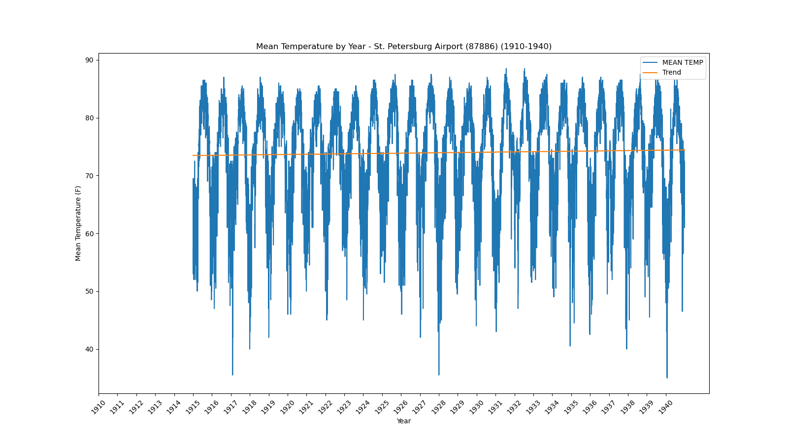</a></div>`)[0];
                popup_4866e4cc724303ccfee275074a8ccb92.setContent(html_3d3f747cd193d6ae94fb2295be58f117);
            
        

        marker_b9a48810bfc588fcc37465082016523d.bindPopup(popup_4866e4cc724303ccfee275074a8ccb92)
        ;

        
    
    
            var marker_faafe441e0bc9e7c148bf8df8133b5c0 = L.marker(
                [27.2, -80.25],
                {}
            ).addTo(map_912136af7e485e8a2fd06f4344bc14c2);
        
    
            var icon_6bd2b3d81b32a062ce34de89fa53952d = L.AwesomeMarkers.icon(
                {"extraClasses": "fa-rotate-0", "icon": "info-sign", "iconColor": "white", "markerColor": "blue", "prefix": "glyphicon"}
            );
            marker_faafe441e0bc9e7c148bf8df8133b5c0.setIcon(icon_6bd2b3d81b32a062ce34de89fa53952d);
        
    
        var popup_3d3eb24b3b4e784d8750cd0a1d6988a7 = L.popup({"maxWidth": 1000, "minWidth": 500});

        
            
                var html_c114dff6b392e0da1f462c66fd486f92 = $(`<div id="html_c114dff6b392e0da1f462c66fd486f92" style="width: 100.0%; height: 100.0%;"><b>Stuart (88620)</b><br>lat: 27.2, lon: -80.25<br><a href='../../static/img/plots/timeseries/meantemp_daily/88620_1910-1940.png' target='_BLANK'></a></div>`)[0];
                popup_3d3eb24b3b4e784d8750cd0a1d6988a7.setContent(html_c114dff6b392e0da1f462c66fd486f92);
            
        

        marker_faafe441e0bc9e7c148bf8df8133b5c0.bindPopup(popup_3d3eb24b3b4e784d8750cd0a1d6988a7)
        ;

        
    
    
            var marker_254c86d9ddd9b6f2a2bd545c9b89190e = L.marker(
                [27.98, -82.53],
                {}
            ).addTo(map_912136af7e485e8a2fd06f4344bc14c2);
        
    
            var icon_a46df612ad844872cb01e35eee542b78 = L.AwesomeMarkers.icon(
                {"extraClasses": "fa-rotate-0", "icon": "info-sign", "iconColor": "white", "markerColor": "blue", "prefix": "glyphicon"}
            );
            marker_254c86d9ddd9b6f2a2bd545c9b89190e.setIcon(icon_a46df612ad844872cb01e35eee542b78);
        
    
        var popup_ac06b5b0c213c62cd2fae7bccc43e381 = L.popup({"maxWidth": 1000, "minWidth": 500});

        
            
                var html_aad290a1298e015ce4da544e09e4c29f = $(`<div id="html_aad290a1298e015ce4da544e09e4c29f" style="width: 100.0%; height: 100.0%;"><b>Tampa Intl Airport (88788)</b><br>lat: 27.98, lon: -82.53<br><a href='../../static/img/plots/timeseries/meantemp_daily/88788_1910-1940.png' target='_BLANK'></a></div>`)[0];
                popup_ac06b5b0c213c62cd2fae7bccc43e381.setContent(html_aad290a1298e015ce4da544e09e4c29f);
            
        

        marker_254c86d9ddd9b6f2a2bd545c9b89190e.bindPopup(popup_ac06b5b0c213c62cd2fae7bccc43e381)
        ;

        
    
    
            var marker_529b0d437fff2b486a2d321517b0e637 = L.marker(
                [28.15, -82.75],
                {}
            ).addTo(map_912136af7e485e8a2fd06f4344bc14c2);
        
    
            var icon_c87ed3874270b69d3dedfe0520a7f40a = L.AwesomeMarkers.icon(
                {"extraClasses": "fa-rotate-0", "icon": "info-sign", "iconColor": "white", "markerColor": "orange", "prefix": "glyphicon"}
            );
            marker_529b0d437fff2b486a2d321517b0e637.setIcon(icon_c87ed3874270b69d3dedfe0520a7f40a);
        
    
        var popup_d027ea90eaf1ae10e35d2a3291e050fa = L.popup({"maxWidth": 1000, "minWidth": 500});

        
            
                var html_9bc93328d22ac02deba8160d1d87e1aa = $(`<div id="html_9bc93328d22ac02deba8160d1d87e1aa" style="width: 100.0%; height: 100.0%;"><b>Tarpon Springs Sewage Plant (88824)</b><br>lat: 28.15, lon: -82.75<br><a href='../../static/img/plots/timeseries/meantemp_daily/88824_1910-1940.png' target='_BLANK'></a></div>`)[0];
                popup_d027ea90eaf1ae10e35d2a3291e050fa.setContent(html_9bc93328d22ac02deba8160d1d87e1aa);
            
        

        marker_529b0d437fff2b486a2d321517b0e637.bindPopup(popup_d027ea90eaf1ae10e35d2a3291e050fa)
        ;

        
    
    
            var marker_31f7422584e6c23df55cd5cb4ec70915 = L.marker(
                [28.61, -80.82],
                {}
            ).addTo(map_912136af7e485e8a2fd06f4344bc14c2);
        
    
            var icon_8d5f952c20b807ee1c1c2bf73dbe452c = L.AwesomeMarkers.icon(
                {"extraClasses": "fa-rotate-0", "icon": "info-sign", "iconColor": "white", "markerColor": "blue", "prefix": "glyphicon"}
            );
            marker_31f7422584e6c23df55cd5cb4ec70915.setIcon(icon_8d5f952c20b807ee1c1c2bf73dbe452c);
        
    
        var popup_b50a1fd26133a8d60c0d3dfbca4704f0 = L.popup({"maxWidth": 1000, "minWidth": 500});

        
            
                var html_ab1e9db983018c8caff2bdf2c651e5d1 = $(`<div id="html_ab1e9db983018c8caff2bdf2c651e5d1" style="width: 100.0%; height: 100.0%;"><b>Titusville (88942)</b><br>lat: 28.61, lon: -80.82<br><a href='../../static/img/plots/timeseries/meantemp_daily/88942_1910-1940.png' target='_BLANK'></a></div>`)[0];
                popup_b50a1fd26133a8d60c0d3dfbca4704f0.setContent(html_ab1e9db983018c8caff2bdf2c651e5d1);
            
        

        marker_31f7422584e6c23df55cd5cb4ec70915.bindPopup(popup_b50a1fd26133a8d60c0d3dfbca4704f0)
        ;

        
    
    
            var marker_108ff4dcc160231d9efb59d3987fce4a = L.marker(
                [27.1, -82.43],
                {}
            ).addTo(map_912136af7e485e8a2fd06f4344bc14c2);
        
    
            var icon_def2eeadbd645d9ef2931857c5572aab = L.AwesomeMarkers.icon(
                {"extraClasses": "fa-rotate-0", "icon": "info-sign", "iconColor": "white", "markerColor": "orange", "prefix": "glyphicon"}
            );
            marker_108ff4dcc160231d9efb59d3987fce4a.setIcon(icon_def2eeadbd645d9ef2931857c5572aab);
        
    
        var popup_8ff13b16e3ec60f452f633e42b50e7bb = L.popup({"maxWidth": 1000, "minWidth": 500});

        
            
                var html_efa7b3d07652fcd51192b3826774a2fa = $(`<div id="html_efa7b3d07652fcd51192b3826774a2fa" style="width: 100.0%; height: 100.0%;"><b>Venice (89176)</b><br>lat: 27.1, lon: -82.43<br><a href='../../static/img/plots/timeseries/meantemp_daily/89176_1910-1940.png' target='_BLANK'>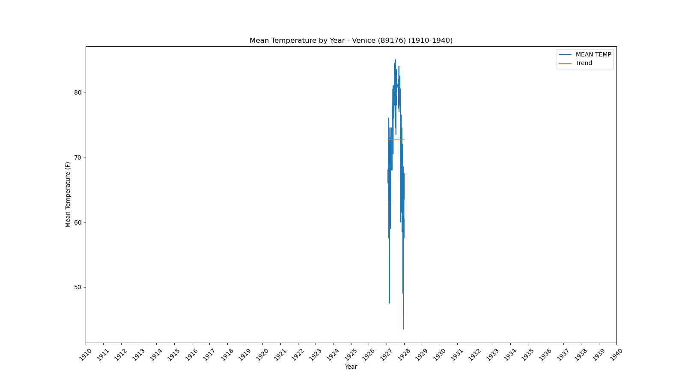</a></div>`)[0];
                popup_8ff13b16e3ec60f452f633e42b50e7bb.setContent(html_efa7b3d07652fcd51192b3826774a2fa);
            
        

        marker_108ff4dcc160231d9efb59d3987fce4a.bindPopup(popup_8ff13b16e3ec60f452f633e42b50e7bb)
        ;

        
    
    
            var marker_3bcd7bb485c191c97e16117164b5eb0a = L.marker(
                [27.51, -81.89],
                {}
            ).addTo(map_912136af7e485e8a2fd06f4344bc14c2);
        
    
            var icon_6518451e85fc7d7bc8a387797b6f7bc3 = L.AwesomeMarkers.icon(
                {"extraClasses": "fa-rotate-0", "icon": "info-sign", "iconColor": "white", "markerColor": "blue", "prefix": "glyphicon"}
            );
            marker_3bcd7bb485c191c97e16117164b5eb0a.setIcon(icon_6518451e85fc7d7bc8a387797b6f7bc3);
        
    
        var popup_74ef71371edc8744ef77a49da974f953 = L.popup({"maxWidth": 1000, "minWidth": 500});

        
            
                var html_cb50943921026e5cec36218ebc5b15ab = $(`<div id="html_cb50943921026e5cec36218ebc5b15ab" style="width: 100.0%; height: 100.0%;"><b>Wauchula (89401)</b><br>lat: 27.51, lon: -81.89<br><a href='../../static/img/plots/timeseries/meantemp_daily/89401_1910-1940.png' target='_BLANK'></a></div>`)[0];
                popup_74ef71371edc8744ef77a49da974f953.setContent(html_cb50943921026e5cec36218ebc5b15ab);
            
        

        marker_3bcd7bb485c191c97e16117164b5eb0a.bindPopup(popup_74ef71371edc8744ef77a49da974f953)
        ;

        
    
</script>
</html>